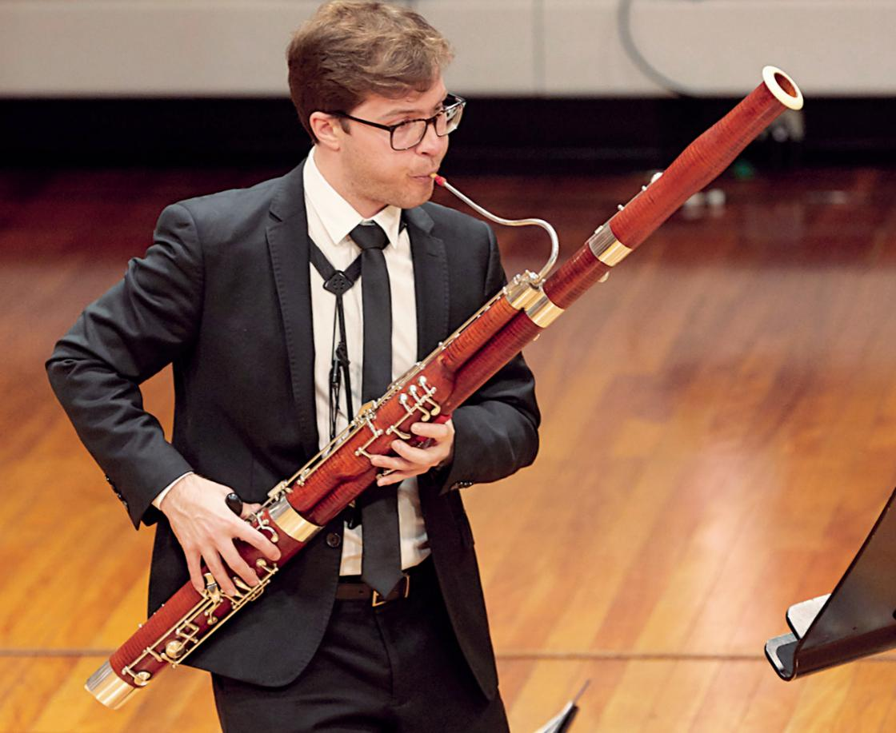
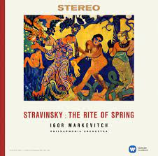

from other woodwind instruments, it is necessary
in order to reach such low pitches
instruments to master.
from Igor Stravinsky's Rite of Spring, where the
bassoon plays the first musical material of the
entire piece.
|  |
|  |
| While the size of the bassoon may stand out from other woodwind instruments, it is necessary in order to reach such low pitches |
It is well known that the bassoon is one the hardest woodwind instruments to master. |
One of the most well known bassoon solo comes from Igor Stravinsky's Rite of Spring, where the bassoon plays the first musical material of the entire piece. |
| Click here to go back to the homepage |